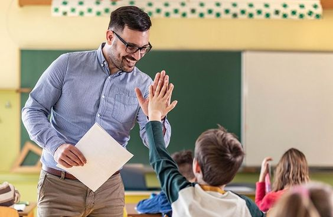

Ideea noastra de a pune accent pe hobby-urile societatii a pornit acum 3 ani, in octombrie 2020. Pe perioada pandemiei, odata cu izolarea, activitatile extracuriculare au inceput sa se estompeze in peisaj, elevii canalizandu-si energia pe device-uri in detrimentul unor activitati cu privire la dezvoltarea personala. Pana la finalul anului 2023 am lucrat la complexul nostru artistic si sportiv, am ridicat cladirea in centrul vechi, in locul unei foste case parasite. De 5 luni, intemeiem o comunitate atat fizic, cat si spiritual, si invitam toate varstele sa ni se alature in aceasta calatorie spre lumea pasiunilor.
Despre cursuri…
Ne-am dorit si am incercat sa cuprindem cat mai multe sectii pentru fiecare personalitate, iar cursurile sunt plasate astfel incat sa nu se intersecteze atat de mult cu alte activitati, intrucat un elev poate opta pentru 3 cursuri la care poate lua parte pe saptamana, avand sansa de a incerca cat mai multe activitati. De asemenea, orele sunt puse dupa ora 15:00, dand posibilitate tuturor de a participa dupa programul scolar/profesional zilnic.
Sa cunoastem profesorii…
Profesorii/coordonatorii sunt persoane cu experienta de minim 10 ani in domeniu, astfel noi le asiguram studentilor ca sunt pe maini bune. Mai mult, printre profesori avem campioni mondiali:
La tenis: SIMONA HALEP
La inot: DAVID POPOVICI
La pictura: COSTEA SARA
La canto: STEFAN CAPRARU
Relatia elev-profesor…

De multe ori s-au legat conexiuni frumoase si puternice intre profesori si elevi, astfel a ajutat la dezvoltarea fiecaruia, atat a coordonatorului pentru a crea o atmosfera prielnica, cat si a elevilor care au nevoie de un mediu prietenos si sigur.